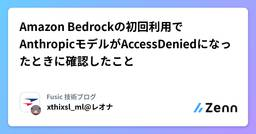

Fusic 技術ブログのフィード
https://zenn.dev/p/fusic
さまざまな個性を受け入れて有機的につなぐ社内環境を整える。あらゆる事業機会の創出と実現を繰り返し、世の中に対する視点を絶えず増やして成長していく。あっと驚くような角度から発展できるポイントを見つけ、そこにいい感じにフィットする形でテクノロジーを組み込んで、世の中をちょっとずつ、時
フィード

Amazon Bedrockの初回利用でAnthropicモデルがAccessDeniedになったときに確認したこと
Fusic 技術ブログのフィード
はじめにFusicのレオナです。Amazon Bedrockを初めて利用するAWSアカウントで、Anthropicモデルのユースケース情報を提出し、Claude Sonnet 4.6を呼び出そうとしたところ、次のエラーが発生しました。AccessDeniedException: Model access is denied due to IAM user or service role is not authorizedto perform the required AWS Marketplace actions (aws-marketplace:ViewSubscripti...
17時間前

Strands Agentsのプロンプトキャッシュで 社内RAG Agentの入力コストを半減させてみた
Fusic 技術ブログのフィード
背景こんにちは、Fusicの大宮です。私は、社内向けSlack Botである「Fusicマン+」の運営をしています。Fusicマン+は、Confluenceの社内ハンドブックを検索して質問に答えるRAG AI エージェントです。運用開始してから時間も経過していたので、改めてコストを見直したい思い運用コストを調べていたところ、ECSやSecretManagerなどの固定費は月＄13~15であるのに対し、変動費はBedrockのトークン課金だけで月＄20~＄30かかっていることがわかりました。今回は、そんなFusicマン+の現状を測定 & コストを抑える方法を調査,実装...
1日前

Snowflakeのデータが可視化しにくい？MetabaseでIoTデータのダッシュボードを構築する
Fusic 技術ブログのフィード
はじめにSnowflakeに自室の環境センサーの測定値を蓄積しはじめて1ヶ月が経過しました。https://zenn.dev/fusic/articles/stream-iot-data-to-snowflakeこれまで溜まったデータはSnowsightでSQLを実行することで確認していたのですが、SQLを実行するのは毎回手間ですし、データの量が増えたことでなかなかグラフが描画されないといった課題が顕在化してきました。Snowflakeにデータを蓄積すれば可視化まで一気通貫で実現できると思っていましたが、本格的な可視化をしようとすると Snowflake App Runtim...
6日前

Kaggle AI Agent Securityコンペ振り返り ー345th Place Solution
Fusic 技術ブログのフィード
はじめにFusicのレオナです。今回は、Kaggleの「AI Agent Security - Multi-Step Tool Attacks」[1]に参加しました。最終結果は4,186チーム中345位、スコア6.675で銅メダル。Public Leaderboard(以下、Public LB)では良く見えた本命がPrivate Leaderboard(以下、Private LB)で落ちましたが、2本目に別ルートのヘッジ案を残していたおかげでスコアがつきました。[2]その過程を振り返り、ブログに残します。 コンペ概要「AI Agent Security - Multi-St...
9日前
Kaggle Pokémon TCG AI Battle Challenge ポケカコンペ振り返りーメダルなし
Fusic 技術ブログのフィード
はじめにFusicのレオナです。今回は、Kaggleの「The Pokémon Company - PTCG AI Battle Challenge Simulation」に参加してみました。最終結果は6,807チーム中1,160位、スコア797.4。暫定ランキングでは一時的に39位まで上がりましたが、最後まで維持できず、メダルには届きませんでした。その過程を振り返り、ブログに残します。なお筆者はポケモンカードゲーム(以下、ポケカ)未経験です。 コンペ概要「The Pokémon Company - PTCG AI Battle Challenge Simulation」は...
10日前
Snowflake × IoT: Amazon MSK(Apache Kafka)を経由してセンサーデータをSnowflakeへ流し込む
Fusic 技術ブログのフィード
はじめに以前の記事で、M5Stack + ENV Ⅲ ユニットで計測した温度・湿度・気圧データを、AWS IoT Core → Amazon Data Firehose → Snowpipe Streaming経由でSnowflakeへ蓄積する仕組みを構築しました。https://zenn.dev/fusic/articles/stream-iot-data-to-snowflakeAmazon MSK(Managed Streaming for Apache Kafka)でもSnowflakeへデータを配信できます。AWS IoT Coreが受け取ったメッセージをKafka...
13日前
3Dの勉強がてら、車のカラーコンフィギュレータ作ってみた
Fusic 技術ブログのフィード
この前、福岡-鹿児島（指宿、枕崎）を往復して800kmちょっと走った石橋です。僕の愛車 ポルシェ・ボクスター 986型 なんですが時々「別のボディカラーだと、どんな感じになるかな」と気になることがあります。なんやかんや今のブラックが一番好きなので変えるわけではないのですが、ツーリング等で同じ型式の別カラーがたまたま居合わせた時じゃないと別カラーの実車は見れません。現在のポルシェのwebページに行けば現行車のコンフィギュレータはあるんですが、過去車については出ていません。https://models.porsche.com/ja-JP/model-start（僕の乗っている型の車...
16日前
Snowflake Alertを使ってIoTデバイスから収集したデータのしきい値超過を検知する
Fusic 技術ブログのフィード
はじめに以前の記事で、M5Stack + ENV3ユニットで計測した温度・湿度・気圧データを、AWS IoT Core → Kinesis Data Firehose → Snowpipe Streaming経由でSnowflakeへストリーミング・蓄積する仕組みを構築しました。https://zenn.dev/fusic/articles/stream-iot-data-to-snowflake今回はこのデータ基盤を使って、「環境センサーで計測した温度が30度を超えたらメールで通知する」というよくある監視要件を、Snowflakeの機能だけで実現します。使うのはSnowfl...
20日前
Snowflake Dynamic tables を使ってIoTデバイスから収集したデータをELTする
Fusic 技術ブログのフィード
Snowflake Dynamic tables(動的テーブル)は定義されたクエリとターゲットの鮮度に基づいて自動更新されるテーブルを提供する機能です。AWSでELT(Extract->Load->Transform)を実現しようとするとAWS GlueやAWS Lambdaといったサービスを間に挟む必要があり、構成や設定が複雑化しがちですし、それらのメンテナンスにも一定のコストがかかります。一方で、動的テーブルはSnowflakeに蓄積したデータをSQLで変換し定期的に別テーブルとして自動更新するため、Snowflake内に完結しますし、楽です。本記事ではSnow...
1ヶ月前
Amazon Bedrockの長期APIキー作成と短期APIキー利用をIAMポリシーで拒否してみた
Fusic 技術ブログのフィード
はじめにFusicのレオナです。Amazon Bedrockでは、AWS標準の署名認証であるSigV4に加えて、APIキーによるBearer認証を利用できます。また、APIキーには既存のAWS認証情報から生成する短期APIキーと、IAMユーザーに関連付けて発行する長期APIキーがあります。利用環境やシステムのセキュリティ方針によっては、長期APIキーを新しく作成できないようにしたり、APIキーによるアクセスだけを制限したりしたい場合があります。そこで本ブログでは、IAMユーザーやIAMロールに付与するアイデンティティベースのポリシーを使用し、以下の4点を検証します。Ama...
1ヶ月前
Kaggle ROGIIコンペ振り返りー192nd Place Solution
Fusic 技術ブログのフィード
はじめにFusicのレオナです。KaggleのROGII - Wellbore Geology Prediction[1]で、水平井戸のガンマ線（GR）をtypewellへ対応付けるCNN-SDFモデルを実装しました。最終結果は192位、Privateスコア8.143で銀メダルでした。[2]このコンペでは、当初は行単位の特徴量と後処理を中心に試していました。しかし最終日に方針を変え、井戸1本を1サンプルとする2次元モデルを実装しました。本ブログでは、CNN-SDFの仕組み、評価方法を切り替えた理由、終了後に公開された上位解法との共通点を振り返ります。 結果構成pa...
1ヶ月前
Snowflake CLIの認証設定、結局どうすればいいのか？調べてみた
Fusic 技術ブログのフィード
Snowflake CLIとは、Snowflakeが提供する開発者向けのコマンドラインツールです。スピーディにアプリケーションを構築したり、SQLを実行したりすることができます。https://docs.snowflake.com/ja/developer-guide/snowflake-cli/indexこの記事はOAuthで認証したい場合の設定をどうすればCLIで完結させられるか、まとめたものです。時間のない人向けに、私が考えた最短の設定コマンドを先に記載しておきます。$ snow connection add \ --connection-name {コネクション名}...
1ヶ月前
ステージング環境をセルフサービス化しチームの開発速度を向上させた方法
Fusic 技術ブログのフィード
はじめに現在、複数人の開発メンバーで新規のWebアプリケーションを開発しています。開発メンバーは5人、さらに、仕様駆動開発の考えを導入した上でDevinも実装者に加わっています。インフラの構築が落ち着き、ある程度の開発基盤も整った段階で、運用上以下の状況が発生していました。チーム内でリリース前の動作確認として単一のStaging環境(AWS環境)を払い出していた。各自の動作確認をstagingブランチに取り込んでいたが、AI前提の開発速度が速すぎて待ちが発生し、そのブランチ運用がボトルネックとなってしまっていた。Staging環境の取り合いによりチーム内での余計なコミュ...
2ヶ月前
Snowflake × IoT: Snowpipe Streamingを使ってデバイスから送信したセンサーデータを数秒以内に蓄積する
Fusic 技術ブログのフィード
はじめにATOMS3 Liteに接続した環境センサーで計測した温度・湿度・気圧のデータを、AWS IoT Core経由でSnowflakeへリアルタイムに届け続ける仕組みを、実際に手を動かしながら構築します。ポイントは、Amazon Data Firehoseに用意されているSnowflakeへの連携機能(Snowpipe Streamingへの配信)を使う点です。Lambdaや変換用のアプリケーションコードを一切書かずに、IoTデバイスのデータをSnowflakeのテーブルへ直接ストリーミングできます。 全体構成構築するシステムの全体像は以下の通りです。コン...
2ヶ月前
Gemini Enterprise Agent PlatformのPipelinesで学習からModel Registry登録まで試してみた
Fusic 技術ブログのフィード
はじめにFusicのレオナです。前回のブログでは、Model Registryへ登録したscikit-learnモデルをEndpointへデプロイし、オンライン推論まで確認しました。https://zenn.dev/fusic/articles/5f054db81f3585今回は少し工程をさかのぼり、モデルがModel Registryへ登録されるまでの流れをPipelinesで自動化します。データ準備、学習、評価、登録を1つのワークフローにつなぎ、評価結果のRecallが閾値を超えたモデルだけを登録する構成です。一つひとつの処理は手動でも実行できます。ただ、手順が増えるほ...
2ヶ月前
Gemini Enterprise Agent PlatformのModel RegistryからEndpointへデプロイ試してみた
Fusic 技術ブログのフィード
はじめにFusicのレオナです。今回は、Custom Trainingで作成したscikit-learnのExperimentModelを、Gemini Enterprise Agent PlatformのModel Registryへ登録し、Endpointへデプロイしてオンライン推論を実行します。ExperimentModelはML Metadata上のArtifactです。Endpointから推論に利用するには、Model RegistryのModelとして登録し、Endpointへデプロイする必要があります。[1]学習とモデル選定については、前回のブログで扱っています...
2ヶ月前
Qwen2.5-VLに正常画像だけを見せ、外観検査の異常候補を理由付きJSONをローカルで集めてみた
Fusic 技術ブログのフィード
はじめにFusicのレオナです。外観検査モデル構築を進めるとき、最初に困るのが「異常画像の少なさ」です。正常品の画像は比較的集めやすい一方で、異常品はそもそも発生数が少なく、どのような欠陥が出るのかを事前に網羅することも簡単ではありません[1]。そこで今回は、追加学習を行わず、Qwen/Qwen2.5-VL-7B-Instructに正常品の画像だけを見せる方法を試しました。環境はRTX 3090 Ti（24GB）1枚です。検査対象の画像を渡し、次の情報をJSONで出力させます。正常・異常・要確認の判定想定される欠陥の種類と位置そのように判断した理由アノテーター向けの短...
2ヶ月前
AWSの設計をさくらのクラウドに読み替える 〜ネットワーク構築で見えた設計思想の違い〜
Fusic 技術ブログのフィード
はじめにFusicの阿河です。弊社は普段AWSを主軸にお客様のシステムを設計・構築していますが、今回チーム内の有志でさくらのクラウドのPoCを行いました。理由は2つあります。 PoCを行った背景一つは顧客要件の変化です。宇宙ドメインやパブリックセクターのお客様と接する中で、データ所在地を国内に限定したい、閉域網で完結させたい、という要望が増えています。ガバメントクラウド認定によって、国産クラウドを正面からご提供できる状況が整いつつあります。二つ目はGPUリソースです。AI活用が本格化する中で、価格やスペックの比較以前に 「必要な規模を確保できるか」が計画を左右する場面...
2ヶ月前
Gemini Enterprise Agent PlatformのExperiments 試してみた
Fusic 技術ブログのフィード
はじめにFusicのレオナです。今回は、Gemini Enterprise Agent Platform Experimentsを使って、Custom Trainingで学習したscikit-learnモデルを比較しました。Gemini Enterprise Agent Platformは、旧Vertex AI Platformから名称変更されたサービスです。[1]前回のブログではBigQueryの公開データを使って2件のCustom Jobを実行し、学習コードからmodel.joblibをCloud Storageへ直接保存しました。https://zenn.dev/fus...
2ヶ月前
Gemini Enterprise Agent PlatformのCustom Training試してみた
Fusic 技術ブログのフィード
はじめにFusicのレオナです。今回は、Gemini Enterprise Agent PlatformのCustom Trainingを利用し、scikit-learnでモデルを学習しました。Gemini Enterprise Agent Platformは、旧Vertex AI Platformから名称変更されたサービスです。[1]ローカル環境で学習コードを実行する場合、実行環境の構築やログの管理、学習済みモデルの保存先などを利用者自身で用意する必要があります。一方、Custom Trainingでは、指定したコンテナをマネージドVM上で実行できます。[2]実行時に標準出...
2ヶ月前